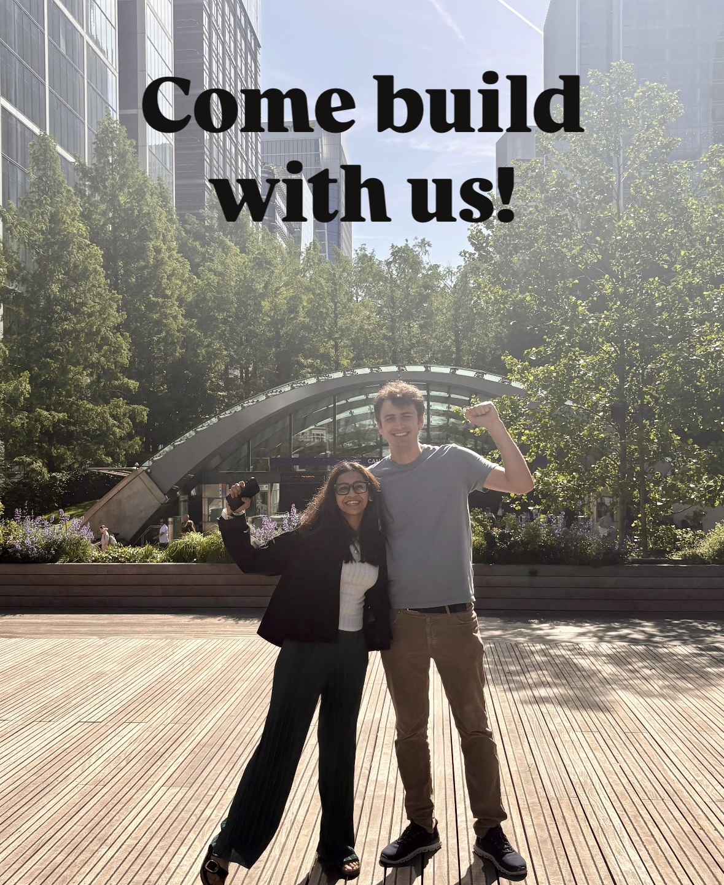

The #1 community for ambitious Solo Founders in London.
Building alone is hard. SFF connects you with the right people and resources to make your journey easier and less lonely.
JOIN — IT'S FREE!


What you get as a fellow
- Connect with ambitious solo founders building alongside you
- Expert-led workshops on legal, fundraising, AI, GTM, and more
- Access up to £15k of free AI and SaaS credits, discounts, and founder perks
- Regular in-person socials & meetups in London
- WhatsApp and Slack to get answers, support, and feedback from fellow founders
- Accountability sessions to help you stay focused and make progress
- Warm intros to our network of angel investors and VCs
- Free fundraising guidance, pitch deck reviews, and feedback from VCs
About us
We're Mansi and Luca, former VCs and solo founders who know firsthand how challenging and isolating the founder journey can be.
We started the Solo Founder Fellowship (SFF) because we believe that surrounding yourself with the right people and resources in the early days can make all the difference.
SFF is a London-based community for ambitious founders who are building alone with conviction. We're here to provide the network, accountability, resources, and support to help you reach your goals.
If you'd like to learn more, register above or email us at team@solofounderfellowship.com.
